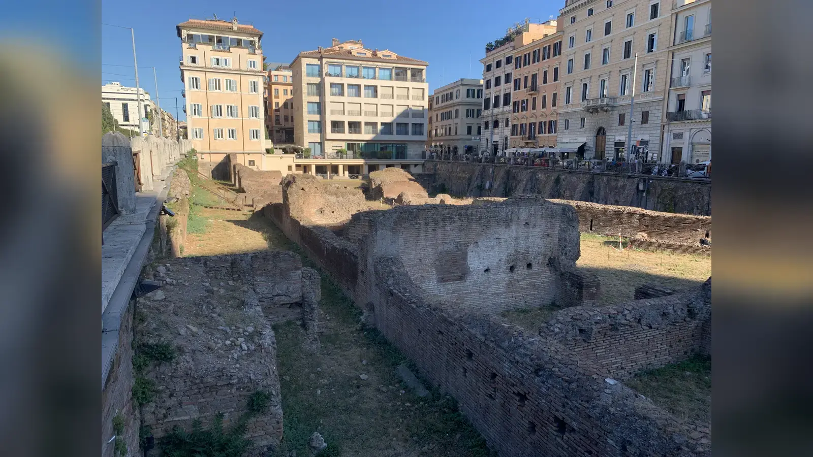
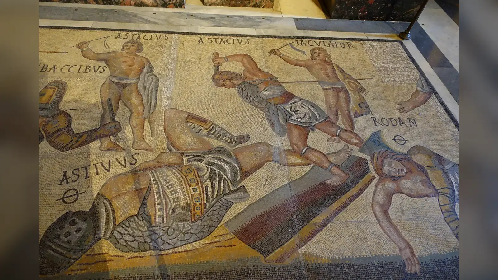
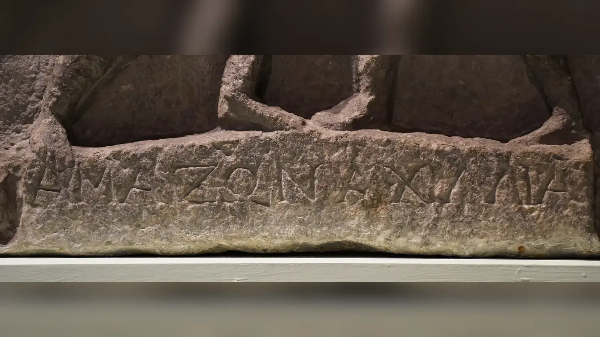

Bir gladyatörün dövüş sabahını dakika dakika anlatan bir günlük program elimizde yok. Yine de Roma ve Pompeii’deki gladyatör yapıları, mezar yazıtları, antik tasvirler ve yazılı kaynaklar bir araya getirildiğinde o sabahın sınırları görülebilir. Dövüşçü, yaşadığı ludus içindeki kontrollü yaşam alanından çıkıyor, haftalar veya aylar boyunca çalıştığı silah türüne hazırlanıyor, bedeni ve ekipmanı gözden geçiriliyor, ardından gösterinin yapılacağı arenaya götürülüyordu. Roma’daki Ludus Magnus örneğinde okul ile Kolezyum arasındaki doğrudan bağlantı, eğitim alanıyla gösteri mekânının ne kadar örgütlü bir sistem oluşturabildiğini gösterir. Fakat arenaya çıkan kişi, sinemanın sıkça sunduğu gibi o sabah rastgele eline kılıç verilmiş ve birkaç dakika içinde ölmesi beklenen isimsiz bir mahkûm olmak zorunda değildi.
Roma gladyatörleri hakkındaki popüler görüntü, birbirinden farklı arena aktörlerini tek bir kategoriye toplar. Her gladyatör köle değildi; özgür kişiler de sözleşmeyle dövüşebiliyordu. Her arena gösterisi gladyatör dövüşü değildi; hayvan avları ve mahkûm infazları farklı gösteri türleriydi. Her karşılaşma ölümle bitmiyor, yenilen bir dövüşçü bağışlanabiliyordu. Gladyatörler her gün seyirci karşısına da çıkarılmıyordu. Dövüşebilmek için eğitim görmeleri, beslenmeleri, yaralarının iyileşmesi ve belirli bir silah sınıfında uzmanlaşmaları gerekiyordu. Başarılı bir dövüşçü, sahibinin veya okulunun ekonomik yatırımıydı; gereksiz yere sakatlanması yalnızca insan kaybı değil maddi kayıp da demekti.
Bu nedenle “gladyatörler nasıl yaşıyordu?” sorusunun cevabı arena kumundan çok arenanın arkasında bulunur. Gladyatörlerin günlük hayatı eğitim, disiplin, sınırlı hareket özgürlüğü, kontrollü beslenme, tıbbi bakım, meslektaşlık ilişkileri ve bir sonraki karşılaşmaya hazırlanma çevresinde şekilleniyordu. Bazıları zorla bu dünyaya sokulmuştu; bazıları para kazanmak için gönüllü olarak kendi bedenlerini sözleşmeyle bu sisteme teslim etmişti. Roma toplumu onları hukuken ve ahlaken aşağılayabiliyor, aynı kişilerin isimlerini duvarlara yazıp görüntülerini kandillerin üzerine taşıyabiliyordu. Gladyatör hayatının en çarpıcı yanı bu çelişkidir: aşağılanan ama seyredilen, kontrol edilen ama ün kazanabilen, ölüm riski taşıyan fakat yaşaması için ciddi kaynak harcanan insanlar olmaları.
Gladyatörler Kimlerdi?
Gladiator sözcüğü Roma’nın kısa kılıcı gladius ile aynı kökten gelir; ancak gladyatörlük tek bir silah veya tek bir savaş tarzı anlamına gelmiyordu. Munera adı verilen gladyatör gösterilerinin erken Roma tarihi cenaze törenleriyle bağlantılıydı. Roma’daki ilk belgelenmiş örneklerden biri MÖ 264’te Decimus Junius Brutus Pera’nın cenazesi için oğullarının düzenlediği üç gladyatör çiftinin dövüştürülmesiydi. Zamanla aristokrat ailelerin cenaze yükümlülüğü ve prestij gösterisi olan bu karşılaşmalar büyüdü, Cumhuriyet’in son yüzyıllarında siyasal rekabetin aracına dönüştü ve imparatorluk döneminde devlet ile imparatorluk iktidarının yönettiği büyük kamusal gösteri kültürünün parçası oldu. Kolezyum bu tarihin en ünlü sahnesidir, fakat gladyatör gösterileri Flavius hanedanının MS 1. yüzyıl sonlarında inşa ettiği bu yapıdan yüzyıllar daha eskidir.
Gladyatörlerin tamamı köle değildi. Savaş esirleri ve köleleştirilmiş kişiler önemli bir kaynak oluşturuyor, bazı hükümlüler ad ludum cezasıyla gladyatör okuluna gönderilebiliyordu. Bunun yanında özgür erkeklerin de para karşılığında gladyatörlük sözleşmesi yaptığı bilinmektedir; bunlara auctorati deniyordu. Özgür bir insanın neden toplumun damgaladığı böylesine tehlikeli bir işe girdiği tek nedene indirgenemez. Borç, ekonomik sıkışmışlık, para ödülü, fiziksel beceriden gelir elde etme arzusu ve gösteri dünyasının sunduğu ün farklı kişiler için farklı ağırlıklar taşıyabilirdi. Üst sınıftan kişilerin arenaya çıkması ise öylesine rahatsız edici görülebiliyordu ki devlet zaman zaman seçkinlerin gösterilere katılımını sınırlamaya çalıştı.
Gladyatörlük toplumsal saygınlık bakımından sorunlu bir meslekti. Arena dövüşçüleri infamia ile ilişkilendiriliyor, bedenini kamu gösterisine sunmak Roma elit ahlakında aşağılayıcı kabul ediliyordu. Özgür bir gönüllü para kazanabilse ve seyirciler tarafından sevilebilse bile mesleğin damgası ortadan kalkmıyordu. Tam burada Roma toplumunun ikiliği ortaya çıkar: hukuk ve ahlak söylemi gladyatörü aşağı konuma iterken seyir kültürü başarılı dövüşçüyü tanınan bir figüre dönüştürebiliyordu. Duvar yazıları, kandiller, mozaikler, cam kaplar ve mezar taşları bazı gladyatörlerin isimlerinin ve dövüş kayıtlarının dolaşımda olduğunu gösterir. Onlara doğrudan “spor yıldızı” demek yanıltıcıdır; özgür modern sporcuların hukuki konumuna sahip değillerdi. Fakat beceri, şöhret, seyirci bağlılığı ve ekonomik değer arasındaki ilişki bakımından sınırlı bir benzerlik kurulabilir.
Roma’nın Geç Cumhuriyet döneminde halk gösterilerinin siyasi prestijle ilişkisi, Caesar gibi siyasetçilerin kariyerlerinde de görülebilir. Bu bağlam Julius Caesar neden öldürüldü? makalesinde ele alınan Cumhuriyet siyasetinin rekabetçi yapısıyla birlikte düşünüldüğünde, arenanın yalnızca eğlence mekânı olmadığı anlaşılır. Gösteri düzenlemek kalabalıkla siyasal ilişki kurmanın yollarından biriydi; gladyatör ise bu prestij ekonomisinin merkezindeki bedendi.
Bir Gladyatör Ludus’a Nasıl Girerdi?
Gladyatör okuluna giriş yolu kişinin hukuki durumuna göre değişiyordu. Köleleştirilmiş bir insan satın alınabilir veya sahibi tarafından bir lanistaya devredilebilirdi; hükümlü biri cezasının sonucu olarak okula gönderilebilir, özgür kişi ise belirli şartlarla sözleşme yapabilirdi. Yeni gelenlerin fiziksel özelliklerinin ve becerilerinin değerlendirilmiş olması beklenir, çünkü farklı gladyatör sınıfları farklı beden kullanımı ve teknik gerektiriyordu. Ancak bütün Roma dünyasında uygulanmış ayrıntılı bir “seçme testi” belgesine sahip değiliz. Kaynakların izin verdiği yer ile modern spor seçmelerinden yapılan çıkarımı birbirine karıştırmamak gerekir.
Lanista, gladyatör grubunu yöneten işletmeciydi. Dövüşçülerin edinilmesi, eğitimi, bakımı ve gösteri düzenleyen kişilere sağlanması onun ekonomik düzeninin parçasıydı. Antik Roma’da lanistalık saygın bir meslek değildi; buna rağmen lanista yalnızca elinde kırbaçla dolaşan sinema kötü adamı değildi. Bir familia gladiatoriayı sürdürebilmek için pahalı insan kaynağını, eğitmenleri, yiyeceği, ekipmanı ve sözleşmeleri yönetmek gerekiyordu. Familia sözcüğü de burada modern anlamdaki sıcak aileyi zorunlu olarak ifade etmez; aynı işletmeye bağlı gladyatör topluluğunu anlatan kurumsal bir kavramdır.
Gönüllü gladyatörlerin sözleşmesi özellikle çarpıcı bir sınır içeriyordu. Petronius’un Satyriconunda ve Seneca’nın göndermelerinde gladyatör yeminiyle ilişkilendirilen formül, kişinin “yakılmaya, bağlanmaya, dövülmeye ve kılıçla öldürülmeye” razı olmasını ifade eder. Petronius’taki kullanım edebî bir bağlamdadır; metni bütün okullarda aynı sözlerle imzalanmış noter belgesi gibi kullanmak doğru değildir. Yine de auctoratusun kendi bedenini bir başkasının disiplinine bırakmasının Romalılar açısından ne kadar radikal görüldüğünü yansıtır. Özgür doğmuş bir kişinin para için bu koşulları kabul etmesi, gladyatörlüğün neden hem çekici hem aşağılayıcı görülebildiğini gösterir.
Gladyatör Okulları Nasıldı?
Gladyatör okulu, yani ludus gladiatorius, yalnızca kılıç çalışılan bir avlu değildi; barınma, eğitim, gözetim ve gösteriye hazırlığın aynı sistem içinde yürütüldüğü kurumdu. En iyi bilinen örnek Roma’daki Ludus Magnus’tur. Domitianus döneminde Kolezyum çevresinde oluşturulan altyapının parçası olan bu büyük okulun kalıntıları günümüzde de görülebilir. Roma’daki resmî arkeoloji kurumunun verilerine göre Ludus Magnus, Kolezyum’un doğu tarafındaki bir cryptoporticus aracılığıyla arena kompleksine bağlanıyordu. Aynı bölgede silah depoları, sağlık işleviyle ilişkilendirilen Saniarium ve gösteri altyapısına hizmet eden başka yapılar bulunuyordu. Bu düzen, imparatorluk başkentinde gladyatör gösterisinin arkasında uzmanlaşmış bir lojistik ağ bulunduğunu ortaya koyar.
Ludus Magnus bütün gladyatör okullarının bire bir modeli değildir. Pompeii’deki yapılar, Capua’daki gelenek ve Carnuntum’da jeofizik araştırmalarla belirlenen büyük okul farklı yerel koşulları gösterir. Carnuntum araştırmaları, odalar, eğitim alanı ve merkezinde palus olabileceği düşünülen bir direk yuvasıyla çevrili küçük bir antrenman arenasını ortaya çıkarmıştır. Pompeii’de “gladyatör kışlası” olarak bilinen quadriporticus da gladyatör yaşamının mekânsal örgütlenmesini tartışmak için önemlidir. Fakat tek bir yapıda kaç kişinin aynı odada uyuduğuna ilişkin yorumları bütün imparatorluğa yaymak güvenilir değildir.
Yaşam alanları özgürlük anlamına gelmiyordu. Özellikle köleleştirilmiş ve hükümlü dövüşçüler için güvenlik, gözetim ve hareket kısıtlaması sistemin temel parçasıydı. Spartacus’un Capua’daki okuldan kaçış hikâyesi bile gladyatörlerin istedikleri zaman şehirde dolaşan bağımsız sporcular olmadığını hatırlatır. Buna karşılık hepsini sürekli zincirlenmiş karanlık zindanlarda yaşayan insanlar gibi göstermek de arkeolojik çeşitliliği siler. Okullar, gladyatörün hem tutulduğu hem de değerli bir dövüşçüye dönüştürüldüğü yerlerdi. Aylarca beslenmiş ve eğitilmiş bir dövüşçünün gereksiz sakatlığı ekonomik zarardı; disiplin ile bakım bu nedenle aynı işletme mantığının iki parçasıydı.

Gladyatörlerin Bir Günü Nasıl Geçiyordu?
Hiçbir kaynak bize bütün Roma dünyasına uygulanabilecek saat saat günlük program bırakmamıştır. Gladyatörlerin bir gününü anlatırken eğitim tekniklerini, okul mimarisini, beslenme verilerini ve tıbbi kaynakları birleştirmek gerekir. Günün önemli bölümü fiziksel hazırlık ve belirli silah türünün tekrarına ayrılıyor olmalıydı; yoğun antrenmanın dinlenme ve iyileşmeyle dengelenmesi de ekonomik olarak gerekliydi. Yaralı bir gladyatörün sürekli çalıştırılması onun arena değerini azaltırdı. Yemek, bakım, temizlik, uyku ve gözetim de bu kurumsal hayatın parçalarıydı.
Modern spor kampı benzetmesi yalnızca sınırlı ölçüde işe yarar. Düzenli beslenme, teknik antrenman, uzman eğitmen, performans ve iyileşme bakımından benzerlik vardır. Fakat köleleştirilmiş veya hükümlü gladyatör kampı terk etme özgürlüğüne sahip modern sporcu değildi. Gönüllü auctoratus bile sözleşme boyunca bedenini sert disipline teslim etmişti. Günlük yaşamın düzenliliği bu nedenle konfor değil, kontrolün başka bir biçimiydi. Gladyatörler her gün arenaya da çıkmıyordu. Kamusal dövüş bir eğitim seansı değil, hazırlık gerektiren gösteriydi; mezar yazıtlarında çok sayıda karşılaşmaya sahip kariyerlerin kaydedilmiş olması bazı dövüşçülerin yıllara yayılan meslek hayatı sürdürebildiğini gösterir.
Gladyatörler Nasıl Eğitiliyordu?
Gladyatör eğitiminin en iyi belgelenen araçlarından biri palus adı verilen antrenman direğidir. Juvenalis’in hicvinde bile bir kadının tahta kılıç ve kalkanla palusa vurması alay konusu edilir; Carnuntum’daki eğitim arenasının merkezinde böyle bir direkle ilişkilendirilen iz belirlenmiştir. Tahta veya köreltilmiş silahlarla tekrar yapmak, gerçek silahla sürekli yaralanma riskine girmeden saldırı mesafesi, denge ve kalkan kullanımını çalışmaya izin veriyordu. Michael J. Carter’ın gladyatör eğitimi üzerine araştırması, sınıflara göre örgütlenmiş eğitimin ve doctores denen uzman eğitmenlerin önemini gösterir.
Gladyatörler tek tip savaşçı değildi. Murmillo büyük dikdörtgen kalkanı, kısa kılıcı ve ağır koruyucu donanımıyla kapalı savunma kullanırken thraex daha küçük kalkan ve kıvrık sica ile farklı açılardan saldırabiliyordu. Retiarius ağ, üç dişli mızrak ve hançer taşıyor; ağır kalkan ve miğfer kullanmadığı için mesafe ve hareket kabiliyetine dayanıyordu. Onun klasik rakiplerinden secutor ise daha korunaklı, pürüzsüz biçimli miğferi ve büyük kalkanıyla retiariusun ağından kurtulup mesafeyi kapatmaya çalışacak biçimde donatılmıştı. Provocatorlar genellikle kendi sınıfları içinde eşleştirilen, kalkan ve kılıç kullanan başka bir kategoriydi.
Bu eşleşmeler gösterinin mantığını açıklar. Amaç iki rastgele silahlı adamı karşı karşıya bırakmak değil, farklı avantaj ve zayıflıkları dengelenmiş mücadele yaratmaktı. Retiarius ile secutor arasında hız ve menzil, zırh ve yakın dövüş baskısıyla karşılaşıyordu; murmillo ile thraex eşleşmesi büyük kalkanlı ağır savunma ile daha küçük kalkan ve kıvrık silahın hareketliliğini karşı karşıya getiriyordu. Gladyatörün eğitmeni yalnızca “kılıç kullanmayı” değil kendi armaturasının taktik dünyasını öğretmek zorundaydı.
Doctores ve magistri olarak anılan eğitmenlerin bazılarının deneyimli veya emekli gladyatörlerden gelmiş olması güçlü bir olasılıktır; kaynaklar uzmanlığın gladyatör sınıflarına göre örgütlendiğini gösterir. Bununla birlikte her eğitmenin geçmiş kariyerini bilmiyoruz. Özgürlüğünü rudis ile kazanmış bir dövüşçünün eğitimci veya hakem olarak gösteri dünyasında kalabilmesi kanıtlarla uyumludur, ancak bunu bütün emekliler için standart kariyer saymamak gerekir.
Gladyatör eğitimini Roma lejyonlarının eğitimiyle özdeşleştirmek de yanlıştır. İki dünyada dayanıklılık ve silah kullanımı gibi ortak unsurlar bulunsa da amaç farklıydı. Lejyoner birlik düzeni içinde, sefer şartlarında ve kolektif taktiklerle savaşmak üzere hazırlanıyordu. Gladyatör ise seyircinin görebileceği, hakemlerin denetlediği ve belirli silah eşleşmelerinin mantığına göre yürüyen bireysel karşılaşmaya hazırlanıyordu.

Gladyatörler Ne Yiyordu?
Kaslı arena dövüşçüsü imgesi modern gözde yüksek miktarda et tüketen atlet çağrıştırabilir, fakat antik ve arkeolojik kanıtlar daha farklı bir tablo sunar. Antik metinlerde gladyatörler hordearii, yani “arpa yiyiciler” olarak anılır. Galenos da gladyatörlerin beslenmesinde arpa ve baklagillerin yerinden söz eder. Bu, her okulda her öğünün aynı olduğu anlamına gelmez; fakat tahıl ve bakliyatın gladyatör diyetinde güçlü bir yeri olduğunu gösteren yazılı gelenek vardır.
Efes’te 1993’te keşfedilen MS 2. ve 3. yüzyıllara ait gladyatör mezarlığı önemli biyolojik veri sağlamıştır. Sandra Lösch, Negahnaz Moghaddam, Karl Grossschmidt, Daniele Risser ve Fabian Kanz’ın 2014 tarihli izotop ve eser element çalışmasında 22 gladyatörün de bulunduğu 53 birey incelendi. Sonuçlar bu örneklemde buğday ve arpa gibi C3 bitkilerinin temel besin olduğunu, düşük azot izotopu değerlerinin baklagil tüketimiyle uyumlu olabileceğini gösterdi. Araştırmacılar gladyatörler ile çağdaş Efesliler arasında karbon, azot ve kükürt izotop ortalamalarında anlamlı büyük fark saptamadı. Dolayısıyla “gladyatörler yalnızca özel bir arpa diyetiyle yaşıyordu” sonucu da verilerden çıkmaz.
Daha ilginç bulgu, gladyatörlerde stronsiyum/kalsiyum oranının karşılaştırma grubundan yüksek olmasıydı. Araştırmacılar bunu antik kaynaklarda sözü edilen bitki külü temelli içeceğin tüketimiyle ilişkilendirilebilecek olası işaret olarak değerlendirdi. Buradan günümüzdeki sporcu takviyesinin antik karşılığının kesin olarak bulunduğu sonucu çıkarılamaz. Çalışma tek bir kentteki belirli mezarlık topluluğuna dayanır. Efes bulgusu, Roma Britanyası’ndan Kuzey Afrika’ya kadar bütün gladyatörlerin aynı içeceği kullandığını kanıtlamaz.
Tahıl ve bakliyat ağırlıklı beslenmenin yüksek enerji sağlaması açıktır. Gladyatörlerde belirli miktarda deri altı yağın yüzeysel kesilere karşı koruyucu olabileceği yönünde modern yorumlar da yapılmıştır; ancak bunun bilinçli ve imparatorluk çapında uygulanmış “yağ tabakası programı” olduğunu kanıtlayan antik talimat yoktur. Beslenmenin daha güvenli açıklaması ekonomiyi, enerji ihtiyacını ve mevcut gıda kültürünü birlikte düşünmektir. Tahıllar Roma dünyasının temel kalorilerindendi; bir gladyatör okulunun çok sayıda dövüşçüyü düzenli beslemesi gerekiyordu.
Nerede Uyuyor ve Nasıl Barınıyorlardı?
Gladyatörlerin barınma koşulları şehir, dönem, okulun büyüklüğü ve kişinin statüsüne göre değişmiş olmalıdır. Ludus Magnus, Carnuntum ve Pompeii gibi alanlar, eğitim avluları çevresinde odalar ve destek mekânları bulunan örgütlü komplekslerin varlığını gösterir. Fakat arkeolojik bir odadan bütün Roma gladyatörlerinin kaç kişiyle uyuduğuna ilişkin evrensel kural çıkarmak mümkün değildir. “Hücre” sözcüğü bazı mekânların küçük ve kontrollü karakterini anlatmak için işe yarasa da her odanın karanlık zindan olduğu düşüncesini beraberinde getirmemelidir.
Köleleştirilmiş gladyatörün barınması ile sözleşmeli özgür dövüşçünün hareket alanı aynı olmayabilirdi. İmparatorluk tarafından yönetilen büyük okullarla özel bir lanistanın işletmesi arasında da farklar bulunabilir. Yine de güvenlik merkezi önemdeydi: gladyatörler silah kullanmayı bilen, ekonomik değeri yüksek ve bazı durumlarda zorla tutulan insanlardı. Kaçışı önlemek okul yönetiminin açık çıkarıydı.
Mezar yazıtları bu kapalı dünyanın sosyal ilişkiden yoksun olmadığını gösterir. Bazı gladyatörler eşleri, partnerleri veya meslektaşları tarafından anılmıştır; aynı familia içindeki dövüşçülerin birbirleri için mezar yaptırdığı örnekler dayanışma ilişkilerine işaret eder. Ancak bunu romantikleştirmemek gerekir. Ortak yaşam arkadaşlık yaratabilirken aynı sistem insanları tehlikeli karşılaşmalara hazırlıyor ve disiplin altında tutuyordu.
Gladyatörler Aile Kurabiliyor muydu?
Bir gladyatörün aile hayatı hukuki statüsüne bağlıydı. Köleleştirilmiş kişilerin birliktelikleri Roma hukukunda özgür yurttaşların hukuken geçerli evliliğiyle aynı statüye sahip değildi. Özgür doğmuş, sözleşmeli veya sonradan azat edilmiş gladyatörlerin durumu farklılaşabiliyordu. Bu nedenle “gladyatörlerin evlenmesi yasaktı” ya da “hepsinin normal aileleri vardı” gibi tek cümlelik cevaplar kaynakların çeşitliliğini karşılamaz.
Mezar yazıtları burada edebî dedikodudan daha güvenli pencere açar. Bazı gladyatörlerin anıtlarını eş olarak tanımlanan kadınlar, partnerler, çocuklar veya aynı meslek çevresinden kişiler yaptırmıştır. Bu yazıtlar gladyatörün arena dışında bağlar kurabildiğini gösterir; fakat hayatta kalan yazıtlar bütün nüfusu temsil eden istatistiksel örneklem değildir.
Antik hiciv ve ahlakçı metinler özellikle seçkin kadınların gladyatörlere duyduğu arzu temasını sever. Juvenalis’in anlatıları gibi metinler Roma elitinin sınıf ve cinsellik kaygılarını yansıtır; bunları tarafsız sosyal araştırma olarak okumak hatalıdır. Gladyatörlerin erotik çekiciliğe sahip olabildiği açıktır, ancak “bütün Romalı kadınlar gladyatörlere hayrandı” türü genellemeler kaynakların söylediğinden fazlasıdır. Gladyatör terinin afrodizyak veya kozmetik olarak kullanıldığına ilişkin popüler iddialar da çoğu zaman bağlamından koparılır. Tarihsel olarak güvenli olan, gladyatör bedeninin Roma kültüründe aynı anda aşağılanan, tehlikeli ve erotikleştirilebilen sembol olmasıdır.
Gladyatörlerin Sağlık Bakımı Nasıldı?
Bir gladyatörün eğitimine para ve zaman harcandıktan sonra yaralanınca tamamen kendi hâline bırakılması ekonomik açıdan anlamsızdı. Roma’daki Kolezyum çevresi altyapısında Saniarium adıyla ilişkilendirilen sağlık yapısının bulunması ve Galenos’un kariyerinin başında Pergamon’daki gladyatörlerle çalışması, tıbbi bakımın gösteri sisteminin gerçek parçası olduğunu gösterir. Galenos yaklaşık MS 157–161 arasında Pergamon’da gladyatörlerin hekimi olarak görev yaptı; bu deneyim ona açık yaralar ve travmalar üzerinde doğrudan gözlem fırsatı vermiş olmalıdır. Fakat onu “bütün Roma gladyatörlerinin kişisel doktoru” gibi anlatmak yanlıştır.
Dönemin hekimleri yaraların temizlenmesi, bandajlanması, kanamanın yönetilmesi, kırık ve çıkıkların ele alınması, diyet ve dinlenme gibi yöntemlerden yararlanabiliyordu. Bunları modern travma cerrahisiyle eşitlemek mümkün değildir. Antibiyotik, modern görüntüleme, güvenli anestezi ve bugünkü sterilizasyon anlayışı yoktu; enfeksiyon, iç kanama, kafa travması ve ağır kesiler ölümcül olabiliyordu. Yine de antik tıbbı hiçbir şey yapamayan uygulama olarak görmek de yanlıştır. Gladyatör yaraları hekimlere kas, tendon ve anatomik yapılar hakkında pratik deneyim sunuyordu.
Efes mezarlığındaki iskeletlerde görülen iyileşmiş travmalar bazı dövüşçülerin ciddi yaralanmalardan sonra yaşamaya devam ettiğini düşündürür. Aynı mezarlıkta ölümle ilişkilendirilebilecek travmalar da vardır. Bu ikisi birlikte okunmalıdır: gladyatörler bakım görebiliyor ve iyileşebiliyordu, fakat tıbbi bakım arena şiddetini güvenli hâle getirmiyordu.
Arena Günü Nasıl Geçiyordu?
Büyük bir Roma gösteri gününde arenada gerçekleşen her şeyi “gladyatör dövüşü” diye adlandırmak en yaygın hatalardan biridir. İmparatorluk dönemindeki büyük programlarda sabah saatleri venationes, yani hayvan avları ve hayvan gösterileriyle başlayabiliyor; öğle aralığında mahkûm infazları yapılabiliyor; gladyatör karşılaşmaları ise günün daha prestijli bölümünde gerçekleştirilebiliyordu. Venatores ve bestiarii hayvan gösterileriyle ilişkili aktörlerdi. Damnatio ad bestias kapsamında vahşi hayvanlara verilen mahkûm ise eğitimli profesyonel gladyatörle aynı kategoriye konulamaz.
Gladyatörlerin arenaya çıkışı gösterinin törensel tarafına sahipti, fakat popüler kültürdeki her ayrıntının evrensel ritüel olduğu varsayılmamalıdır. Ekipmanın denetlenmesi, dövüşçülerin uygun eşleştirilmesi ve hakemlerin mücadeleyi yönetmesi düzensiz sokak kavgasından farklı yapı olduğunu gösterir. Görsel kanıtlarda beyaz tunik ve değnekle betimlenen hakemler bulunur; summa rudis başhakemle ilişkilendirilen unvanlardan biridir. Hakem dövüşü ayırabilir ve kuralların uygulanmasına müdahale edebilirdi.
Bunun karşı ucunda, karşılaşmaları baştan sona koreografisi belirlenmiş tiyatro dövüşleri olarak düşünmek de hatalıdır. Gladyatörler gerçek silahlarla, gerçek yaralanma ve ölüm ihtimali altında mücadele ediyordu. Eğitim ve eşleştirme seyir zevki yaratacak taktik karşıtlığı kuruyordu; sonucu önceden belirlenmiş sahne oyunu hâline getirmiyordu. Arena şiddetinin çekiciliği kontrollü yapı ile gerçek riskin birleşmesinden doğuyordu.
Her Gladyatör Dövüşü Ölümle mi Bitiyordu?
Hayır. Gladyatör dövüşlerinin her zaman ölümle bitmesi hem ekonomik mantıkla hem antik kanıtlarla uyuşmaz. Eğitimli bir dövüşçü aylarca veya yıllarca yatırım gerektiriyordu. Yenilen gladyatör teslim olabilir ve missio, yani bağışlanma alabilirdi. Metropolitan Museum of Art’ın gladyatör dövüşleri üzerine değerlendirmesi de otomatik ölüm anlamına gelen sine missione karşılaşmaların olağan biçim olmadığını vurgular. Bir dövüşçünün mezar yazıtında çok sayıda karşılaşmasının kaydedilmesi de kariyerlerin tek dövüşte sona ermediğini gösterir.
Fakat bundan “gladyatörler neredeyse hiç ölmezdi” sonucu da çıkmaz. Ölüm oranları için modern araştırmalarda farklı tahminler önerilmiştir; bunlar belirli dönemlerin yazıtlarına, karşılaşma kayıtlarına ve sınırlı örneklemlere dayanır. Erken ve geç imparatorluk dönemleri, farklı şehirler veya özel gösteriler aynı ölüm oranına sahip olmak zorunda değildir. Kesin ve bütün Roma tarihine uygulanabilir tek yüzde vermek kanıtların taşıyamayacağı bir kesinlik yaratır.
Yenilen dövüşçü mücadeleyi sürdüremediğinde bağışlanma isteyebilir, seyircinin tepkisi karar üzerinde etkili olabilir ve gösterinin sponsoru olan editor nihai kararı verebilirdi. Popüler “başparmak yukarı yaşatır, başparmak aşağı öldürür” şeması ise güvenilir biçimde çözülebilmiş antik işaret dili değildir. Pollice verso gibi ifadeler başparmağın kullanıldığını gösterse de hangi yönün hangi karara karşılık geldiği tartışmalıdır. Jean-Léon Gérôme’un 1872 tarihli Pollice Verso tablosu ve onu izleyen sinema dili, aşağı çevrilmiş başparmağı ölüm kararının evrensel sembolüne dönüştürdü; tarihsel kanıt bu kadar açık değildir.
“Morituri te salutant” Sözünü Bütün Gladyatörler Söyler miydi?
“Ölmek üzere olanlar seni selamlıyor” diye çevrilen morituri te salutant, gladyatör filmlerinin en tanınmış sözlerinden biridir. Ancak bütün gladyatörlerin imparatorun önünden geçerken bunu söylediğine dair yeterli kanıt yoktur. Suetonius’un Claudius biyografisindeki ünlü örnek, İmparator Claudius’un düzenlediği sahte deniz savaşı, yani naumachia sırasında dövüşmeye zorlanan kişilerle bağlantılıdır. Bu insanlar standart gladyatör çiftinin olağan arena karşılaşmasını temsil etmez.
Tek bir olağanüstü gösteride kaydedilen sözün bütün gladyatörlerin geleneksel selamına dönüşmesi, popüler kültürün antik ayrıntıları nasıl genelleştirdiğinin iyi örneğidir. Gladyatörlerin tören ve sunum biçimleri vardı, fakat her karşılaşmada hep birlikte aynı Latince cümleyi söylediklerini gösteren gelenek bulunmaz.
Başarılı Bir Gladyatör Ne Kazanırdı?
Arena yalnızca ölüm riski değil, maddi ödül de sunabiliyordu. Başarılı dövüşçüler para, hediyeler ve seyirci itibarı kazanabiliyor; deneyimleri arttıkça gösteri düzenleyicileri açısından daha değerli hâle gelebiliyordu. Özgür sözleşmeli auctorati için ekonomik çekim özellikle önemlidir. Marcus Aurelius ve Commodus dönemine ait düzenlemeler, deneyimli özgür gladyatörlerin gösterilere katılım bedellerinin ciddi meblağlara ulaşabildiğini düşündürür.
Fakat kazanç herkes için aynı anlama gelmiyordu. Köleleştirilmiş gladyatörün mülkiyet ve ödül üzerindeki hukuki kontrolü özgür bir auctoratus ile aynı değildi. Mahkûm olarak okula gönderilen kişinin durumu da farklıydı. Daha iyi koşullar, hediye veya para gibi avantajların hangi ölçüde dövüşçünün kendisine kaldığı okul ve hukuki statüye göre değişebilirdi.
Şöhret ise daha görünürdür. Gladyatör isimleri Pompeii duvar yazılarında, mezar anıtlarında ve küçük sanat eserlerinde karşımıza çıkar. Üzerinde tanınmış dövüşçülerin adları bulunan cam kaplar veya gladyatör tasvirli kandiller, seyircilerin arena figürlerini gösteri gününün ötesinde de hatırladığını gösterir. Modern “ünlü sporcu” benzetmesi burada bir noktaya kadar işe yarar; fakat infamia ve köleleştirilmiş olabilme ihtimali karşılaştırmanın sınırını belirler.
Gladyatörler Özgürlüklerini Nasıl Kazanıyordu?
Rudis adı verilen tahta kılıç, gladyatörlükten serbest bırakılmanın veya arena hizmetinden emekliliğin en tanınmış sembolüdür. Başarılı ve uzun kariyerin ardından bir dövüşçüye rudis verilmesi, onun artık zorunlu olarak dövüşmek zorunda olmadığı statüye geçişini simgeleyebilirdi. Ancak her zaferin otomatik olarak özgürlük getirdiği puan sistemi yoktu. Kişinin başlangıçtaki hukuki statüsü, sahibi, sözleşmesi, kariyeri ve gösteriyi düzenleyen otorite süreci etkileyebilirdi.
Özgürlük ile emeklilik de her zaman aynı şey değildir. Köleleştirilmiş birinin hukuken azat edilmesiyle gladyatörün arena hizmetinden çıkarılması farklı sonuçlar doğurabilir. Ayrıca özgürlüğünü elde eden bazı deneyimli dövüşçüler gösteri dünyasından tamamen ayrılmak zorunda değildi. Yeniden ücret karşılığında dövüşmek, eğitmenlik yapmak veya hakemlikle ilişkili görevler üstlenmek becerilerini gelire dönüştürmenin yolları olabilirdi. Bununla birlikte rudis geçmişi silmiyordu; gladyatörlüğe yüklenen infamia eski dövüşçünün sosyal itibarını bir anda seçkin yurttaş seviyesine çıkarmıyordu.
Kadın Gladyatörler Var mıydı?
Kadınların arenada silahlı dövüşçü olarak yer aldığına dair gerçek kanıtlar vardır, ancak erkek gladyatörler kadar yaygın olduklarını söyleyemeyiz. En güçlü maddi kanıtlardan biri Halikarnassos’tan gelen ve bugün British Museum’da bulunan mermer kabartmadır. Kabartmada “Amazon” ve “Achillia” adlarıyla iki kadın dövüşçü karşı karşıya gösterilir. Üstteki yazıt onların missio aldığını belirtir; Kathleen Coleman bunu ikisinin de berabere kalan mücadeleden sonra bağışlanması olarak yorumlamıştır. İsimler büyük olasılıkla mitolojik çağrışımlı arena adlarıdır.
Antik yazarlar da kadınların gösterilere katıldığından söz eder. Suetonius Domitianus döneminde kadın dövüşçüleri aktarır; Cassius Dio ise Septimius Severus döneminde kadınların bu tür karşılaşmalara katılımının yasaklanmasıyla ilişkilendirilen karar kaydeder. Yasak, kadın arena dövüşçülerinin varlığı için önemli kanıttır; fakat sayıca çok olduklarını göstermez. “Gladiatrix” kelimesi bugün kullanışlıdır, ancak antik Roma’da erkek gladiatorun tam karşılığı olarak yaygın standart meslek adı olduğu düşünülmemelidir. Kadın dövüşçüler yalnızca erotik merak unsuru değil, Roma gösteri kültürünün toplumsal cinsiyet sınırlarını ihlal eden nadir aktörleriydi.

Gladyatörlerin Ölümü ve Mezarları
Arena ölümü çevresinde modern anlatıya yerleşmiş çok sayıda dramatik ayrıntı vardır. Merkür kılığına girmiş görevlinin kızgın demirle bedeni kontrol ettiği veya Charon kılığındaki görevlinin çekiç kullandığı yönündeki anlatılar belirli antik gösteri ritüelleri ve yorumlarla ilişkilendirilir; bunları bütün arenalarda ve bütün yüzyıllarda uygulanmış standart ölüm prosedürü gibi sunmak güvenli değildir. Roma gösterileri bölgeye, döneme ve programın niteliğine göre değişebiliyordu.
Ölen gladyatörler hakkındaki en değerli kaynaklardan biri mezar yazıtlarıdır. Bunlar isim, köken, gladyatör sınıfı, dövüş sayısı, yaş, galibiyet veya bağışlanma kayıtları ve mezarı yaptıran kişi hakkında bilgi verebilir. Bir eşin veya meslektaşın yaptırdığı mezar, yalnızca ölüm istatistiği değil gladyatörün sosyal çevresi hakkında da ipucu sunar. Yine de mezar yazıtları seçilmiş örneklemdir: mezar taşı yaptırılmayan çok sayıda insanın hayatı kayıtlarda görünmez.
Efes gladyatör mezarlığı yazılı kanıtı iskelet biyolojisiyle tamamlar. İncelenen kemiklerde iyileşmiş travmalar insanların önceki yaralanmalardan sonra yaşamaya devam ettiğini gösterirken bazı kafa travmaları olası ölüm darbeleri konusunda araştırmacılara veri sağlamıştır. Bu mezarlık gladyatör hayatının iki yönünü aynı anda görünür kılar: beden sürekli şiddete hazırlanıyor ve yaralanıyordu; buna rağmen bakım, iyileşme ve yeniden dövüşebilme gerçekti. Efes’in tek bir yer ve dönem olduğunu unutmamak gerekir.
Spartacus’un İsyanı Gladyatörlerin Hayatını Gösteriyor mu?
Spartacus’un MÖ 73’te Capua’daki Lentulus Batiatus’a ait gladyatör okulundan diğer dövüşçülerle kaçması, ludus yaşamının zorlayıcı tarafına güçlü pencere açar. Plutarkhos ve Appianos ayrıntılarda farklılaşsa da kaçışın gladyatör okulunda başladığı konusunda gelenek nettir. Olay, gladyatörlerin savaşma becerisine sahip olmalarına rağmen gözetim altında tutulduğunu ve zorla gladyatörleştirilmiş insanların okul sistemine karşı çıkabildiğini gösterir.
Fakat Spartacus’un deneyimi bütün gladyatörlerin hayatının özeti değildir. Onun Trakyalı kökeni yaygın biçimde aktarılırken gladyatörlüğe nasıl düştüğünün ayrıntıları antik kaynaklarda tam uyumlu değildir. İsyanın Üçüncü Köle Savaşı’na dönüşmesi de sıradan gladyatör kariyerinin parçası değil olağanüstü tarihsel olaydır. Spartacus okulun gözetimi, kaçış riski ve dövüş eğitimi konusunda kullanılabilir; fakat her ludusu isyan kampı veya her gladyatörü potansiyel Spartacus gibi göstermek doğru değildir.
Sinemadaki Gladyatörlerle Gerçek Gladyatörler Arasındaki Farklar
Sinemanın gladyatör dünyası birkaç farklı Roma gösterisini tek dramatik formülde birleştirmeyi sever. Profesyonel dövüşçüler, idama mahkûm edilenler ve hayvanlarla karşılaşan arena aktörleri aynı kategoriye dönüşür; her mücadele ölümle biter ve seyircinin aşağı çevirdiği başparmak kesin infaz emri olur. Tarihsel kanıt ise daha düzenli fakat daha karmaşık sistem gösterir. Gladyatörler belirli sınıflarda eğitiliyor, uygun rakiplerle eşleştiriliyor, hakemler mücadeleyi yönetiyor ve yenilen dövüşçü bağışlanabiliyordu.
Bütün gladyatörleri köle olarak göstermek gönüllü auctoratiyi görünmez kılar. “Morituri te salutant”ı her karşılaşmanın selamı yapmak Claudius dönemindeki özel naumachia anlatısını evrenselleştirir. Farklı yüzyıllara ait zırhları aynı anda kullanmak gladyatör sınıflarının zaman içinde değiştiğini gizler. Gladyatörü lejyoner gibi savaştırmak bireysel arena tekniğiyle birlik savaşını karıştırır. Bütün gladyatör tarihini Kolezyum’a sıkıştırmak ise kronolojiyi tersine çevirir: gösteriler Kolezyum’dan yüzyıllar önce vardı ve Roma dünyasının çok sayıda kentindeki amfitiyatrolarda düzenleniyordu.
Geç antik çağda gösteri kültürü de değişti; gladyatör karşılaşmaları Roma tarihinin sonuna kadar değişmeden sürmüş kurum değildi. Hristiyanlaşma, imparatorluk politikaları, maliyetler ve geç Roma toplumundaki dönüşümler gösterilerin kaderini etkiledi. Bu daha geniş değişim Roma İmparatorluğu neden yıkıldı? sorusuyla aynı şey değildir; Batı Roma’nın siyasi çöküşünü yalnızca arena kültürünün sona ermesiyle açıklamak mümkün olmadığı gibi gladyatör oyunlarının dönüşümünü de tek nedene bağlamak doğru değildir.
Bir Gladyatörün Değeri Neden Günlük Hayatını Belirliyordu?
Gladyatör yaşamını anlamanın en yararlı yollarından biri, arena dövüşçüsünün aynı anda hem insan hem de ekonomik varlık olarak görülmesinin sonuçlarını izlemektir. Bir lanista yeni bir dövüşçüyü satın aldığında veya sözleşmeyle bünyesine kattığında masraf o anda bitmiyordu. Barınma, tahıl ve bakliyat ağırlıklı düzenli beslenme, eğitmenlerin emeği, ekipman, sağlık bakımı ve dövüşçünün arenaya hazır hâle gelmesine kadar geçen zaman yatırımın parçalarıydı. Bu nedenle gladyatör gösterilerinin şiddet içermesi, sistemin her an maksimum ölüm üretmek istediği anlamına gelmez. Deneyimli bir dövüşçünün erken ölmesi onun gelecekte sağlayacağı gelir ve gösteri değerinin de kaybıydı.
Bu ekonomik mantık, gladyatörün yaşamının insancıl olduğu anlamına gelmez. Tam tersine bakımın nedenlerinden biri dövüşçünün değerinin korunmasıydı. Köleleştirilmiş insanın iyi beslenmesi onun özgür olduğu anlamına gelmediği gibi yaralarının tedavi edilmesi de sistemin şiddetini ortadan kaldırmıyordu. Roma arenasının çelişkisi burada çok belirgindir: insan bedeni korunuyor, çünkü yeniden tehlikeye sokulması bekleniyordu. Eğitimde tahta silahların kullanılması, kontrollü eşleşmeler ve tıbbi bakım bu çerçevede birlikte anlam kazanır.
Gösteriyi düzenleyen editor açısından da deneyimli gladyatörlerin değeri önemliydi. Lanistadan sağlanan dövüşçülerin ölümü ile sağ kalması aynı mali sonuca yol açmıyordu; kaynaklar ölümün organizatör için daha yüksek maliyet doğurabildiğini düşündürür. Bu durum bağışlanma kararını yalnızca merhamet veya seyirci duygusuyla açıklamamamız gerektiğini gösterir. Arena kararı toplumsal gösteri, siyasi prestij ve ekonomik hesapların kesiştiği yerde veriliyordu.
Bir gladyatörün ünü arttıkça bu hesap daha da karmaşıklaşabiliyordu. Seyircinin tanıdığı, adı yazıtlarda veya gündelik nesnelerde dolaşan başarılı bir dövüşçü yalnızca iyi savaşan insan değildi; gelecekteki gösterinin çekiciliğini artıran tanınmış figürdü. Onu kaybetmek yeni ve deneyimsiz bir dövüşçüyü kaybetmekle aynı değildi. Bu, ünlü gladyatörlerin mutlaka güvenli olduğu anlamına gelmez; gerçek silah kullanılan karşılaşmada kontrolün sınırı vardı. Fakat sistemin neden beceri geliştirmeye, eşleşmeye ve iyileşmeye yatırım yaptığını açıklar.
Aynı ekonomik çerçeve gönüllü gladyatörlerin varlığını da anlaşılır kılar. Bir auctoratus yalnızca ölüm arayan maceracı değildi; bedenini ve dövüş becerisini gelir kaynağına dönüştürmeye çalışıyordu. Bu karar Roma elit ahlakında utanç verici görülebilirken ekonomik olarak bazı insanlar için rasyonel seçenek olabilirdi. Borç içindeki bir özgür kişi için arena, yüksek risk karşılığında başka işlerde ulaşamayacağı gelir ve görünürlük ihtimali sunuyordu. Böylece gladyatörlük zorla çalıştırma ile gönüllü ücretli performansın aynı kurum içinde yan yana bulunabildiği sıra dışı bir emek dünyası yaratıyordu.
Bu bakış açısı gladyatörlerin günlük hayatındaki görünür çelişkileri birbirine bağlar. Neden disiplin altında tutulduklarını, neden düzenli eğitildiklerini, neden beslenmelerine dikkat edildiğini, neden doktorların yaralarıyla ilgilendiğini ve neden her dövüşün ölümle bitmesinin gerekli olmadığını aynı sistem içinde açıklayabiliriz. Arena Roma seyircisine ölüm ihtimali satıyordu; fakat o ihtimali etkileyici kılan şey, karşısındaki insanların eğitilmiş ve tanınabilir dövüşçüler olmasıydı.
Gladyatörler Arasında Statü ve Meslektaşlık
Gladyatör okulundaki herkes eşit değildi. Silah sınıfı, deneyim, dövüş geçmişi ve başarı dövüşçünün okul içindeki konumunu etkileyebiliyordu. Yazıtlarda görülen primus palus, secundus palus gibi dereceler belirli bir armatura içinde beceri ve kıdem hiyerarşisinin bulunduğunu düşündürür. Palus burada yalnızca eğitim direğinin adı değil, gladyatör derecelendirmesiyle de ilişkili terimdir. Deneyimli bir dövüşçünün yeni gelenle aynı değer ve sorumluluğa sahip olmadığını gösteren bu yapı, ludusun yalnızca toplu barınma alanı değil uzmanlaşmış meslek örgütü olduğunu ortaya koyar.
Bu hiyerarşi aynı zamanda gladyatörlerin birbirleriyle ilişkisinin yalnızca rakiplikten ibaret olmadığını düşündürür. Aynı silah sınıfındaki dövüşçüler birlikte eğitim görüyor, aynı eğitmenin uzmanlığından yararlanıyor ve uzun süre aynı kurumda yaşıyordu. Mezar yazıtlarında meslektaşların birbirini anması, okul içindeki bağların ölümden sonra da ifade edilebildiğini gösterir. Bunun modern takım arkadaşlığıyla bire bir aynı olduğunu söyleyemeyiz; fakat gladyatörleri yalnızca birbirini öldürmek isteyen izole bireyler gibi düşünmek de kanıtlarla uyuşmaz.
Arena eşleşmeleri de bu sosyal dünyayı etkiliyordu. Belirli gladyatör tipleri geleneksel olarak başka tiplerle karşılaştırıldığı için aynı sınıfta eğitim gören iki kişi her zaman arenada birbirinin doğal rakibi değildi. Michael Carter’ın belirttiği gibi uzmanlaşmış eğitim düzeni, kıdemli dövüşçülerin daha az deneyimli kişilerin hazırlanmasında rol oynayabilmesi ihtimalini güçlendirir. Emekli gladyatörlerin doctor olarak çalışabilmesi de becerinin okul içinde kuşaktan kuşağa aktarılmasını sağlayan mantıklı yoldur.
Bu mesleki kimliğin ölümden sonra mezar taşına taşınması dikkat çekicidir. Gladyatörün sınıfı, dövüş sayısı veya aldığı sonuçlar kimi yazıtlarda kişinin kimliğinin temel parçası olarak kaydedilmiştir. Roma toplumu gladyatörlüğü aşağı statüde görse bile dövüşçüler ve yakın çevreleri mesleki başarıyı hatırlanmaya değer bulabiliyordu. Böylece dışarıdan infamis görülen kişi, kendi topluluğu içinde deneyimli, başarılı ve saygı duyulan meslektaş olabiliyordu.
Gladyatör hayatının tamamını yalnızca sahip ile köle arasındaki ilişkiye indirgemek bu yüzden yetersizdir. Kölelik ve zor kullanımı merkezi gerçeklerdi, fakat aynı kurum içinde özgür gönüllüler, azatlılar, eğitmenler, doktorlar, görevliler ve farklı statülerde dövüşçüler bulunuyordu. Familia gladiatoria kavramı tam da bu kurumsal birlikteliği anlamak için değerlidir; onu sıcak aile metaforuna dönüştürmeden, ortak meslek ve ortak yaşam alanının yarattığı sosyal bağları hesaba katmak gerekir.
Gladyatörlerin Gerçek Hayatı Hakkında Ne Biliyoruz?
Gladyatörlerin yaşamı hakkında bildiklerimiz tek kaynak türünden gelmez. Antik yazarlar yeminleri, gösterileri, toplumsal önyargıları ve sıra dışı olayları aktarır; fakat çoğu gladyatörlerin kendi sesi değildir. Mezar yazıtları isimleri, kökenleri, dövüş kayıtlarını ve yakın ilişkileri görünür kılar. Mozaikler, kabartmalar, kandiller ve cam eşyalar silah sınıflarıyla seyirci kültürünü gösterir. Ludus Magnus, Pompeii ve Carnuntum gibi arkeolojik alanlar eğitim ve barınmanın mekânsal düzenini; Efes mezarlığı ise beslenme ve travmanın doğrudan bedensel izlerini sunar. Bu kanıtların hiçbiri tek başına bütün Roma dünyasını temsil etmez, fakat birlikte sinemadaki tek boyutlu görüntüyü önemli ölçüde düzeltir.
“Gladyatörler nasıl yaşıyordu?” sorusuna verilebilecek en güçlü cevap bu farklı kanıtların kesişimindedir. Onların hayatı birkaç dakikalık arena dövüşünden önce başlayan ve sonra biten hikâye değildi. Gladyatör olmak belirli bir kuruma girmek, silah sınıfında eğitilmek, düzenli beslenmek, gözetim altında yaşamak, yaralandığında mümkünse tedavi görmek, şöhret ve ödül ihtimaliyle ölüm riskini aynı anda taşımak demekti. Bazıları sisteme zorla sokuldu, bazıları para için kendi isteğiyle girdi; bazıları erken öldü, bazıları uzun kariyer yaptı ve bazıları rudis kazanarak arenadan ayrıldı.
Roma toplumu gladyatörü aynı anda hem aşağılıyor hem ona bakmaktan vazgeçemiyordu. Infamia saygınlığını sınırlandırırken seyirci sevgisi adını duvarlara ve gündelik eşyalara taşıyabiliyordu. Lanista onu denetim altında tutarken ekonomik değeri tedavi edilmesini ve eğitilmesini gerektiriyordu. Arena gerçek şiddet üretirken her karşılaşmayı otomatik ölüm hâline getirmek gösterinin yatırım düzenine zarar veriyordu. Gerçek gladyatör hayatı bu yüzden sinemadaki kesintisiz ölüm gösterisinden daha az sert değil, daha karmaşıktır: disiplin, beceri, ekonomik hesap, toplumsal dışlanma, bakım, şöhret ve hayatta kalma çabasının aynı beden üzerinde birleştiği yaşam biçimiydi.
Sık Sorulan Sorular
Gladyatörler nasıl yaşıyordu?
Gladyatörler çoğunlukla ludus adı verilen okullarda eğitim, beslenme, barınma ve gözetimin birlikte yürütüldüğü disiplinli bir düzen içinde yaşıyordu. Köleleştirilmiş kişiler, mahkûmlar ve özgür sözleşmeli dövüşçüler farklı hukuki konumlara sahipti. Günlük hayatın önemli kısmı belirli silah sınıfına yönelik antrenman, yemek, dinlenme ve yaraların bakımı çevresinde şekilleniyordu. Her gün arenaya çıkmıyorlardı. Eğitimli dövüşçü ekonomik yatırım sayıldığı için gereksiz sakatlanması okul açısından da kayıptı. Buna rağmen yaşam özgür ve rahat değildi: özellikle zorla gladyatörleştirilenler gözetim ve hareket kısıtlaması altındaydı, arena karşılaşmaları ise gerçek yaralanma ve ölüm riski taşıyordu.
Gladyatörlerin hepsi köle miydi?
Hayır. Savaş esirleri, köleleştirilmiş kişiler ve bazı hükümlüler yanında özgür kişiler de para karşılığında gladyatörlük sözleşmesi yapabiliyordu. Bu gönüllü dövüşçüler auctorati olarak anılırdı. Borç, ekonomik sıkıntı, kazanç ihtimali veya ün bu seçimi etkileyebilirdi. Bununla birlikte gönüllü olmak gladyatörlüğü saygın hâle getirmiyordu. Arena mesleği infamia ile ilişkilendiriliyor ve kişinin toplumsal-hukuki konumunu olumsuz etkileyebiliyordu. Dolayısıyla bütün gladyatörleri köle saymak da onları tamamen özgür profesyonel sporcular gibi görmek de yanlıştır.
Gladyatörler ne yiyordu?
Antik kaynaklar gladyatörleri hordearii, yani “arpa yiyiciler” olarak anar; tahıl ve baklagiller beslenmede önemliydi. Efes’teki gladyatör mezarlığından bireyler üzerinde yapılan izotop araştırması da buğday ve arpa gibi C3 bitkilerinin temel gıda olduğunu, baklagil tüketiminin önemli olabileceğini düşündürmüştür. Gladyatörlerde yüksek stronsiyum/kalsiyum oranı ayrıca bitki külü içeceğiyle ilişkilendirilmiştir. Ancak Efes tek bir örneklemdir; sonuçları bütün Roma dünyasına genellemek doğru değildir.
Gladyatörler nasıl eğitiliyordu?
Eğitim dövüşçünün silah sınıfına göre uzmanlaşıyordu. Tahta veya köreltilmiş silahlarla palus adı verilen direk üzerinde saldırı, kalkan kullanımı, mesafe ve tekrar çalışmaları yapılabiliyordu. Doctores olarak anılan uzman eğitmenler belirli gladyatör türlerinin tekniklerini öğretiyordu. Murmillo, thraex, retiarius ve secutor gibi sınıfların zırhı, silahı ve taktiği farklıydı. Eğitim gerçek arena dövüşünden ayrılıyordu; amaç öğrencileri her gün ölümcül silahlarla birbirine saldırtmak değil, kontrollü biçimde beceri geliştirmekti.
Gladyatör dövüşleri her zaman ölümle mi bitiyordu?
Hayır. Yenilen gladyatör bağışlanabilir ve missio alabilirdi. Eğitimli gladyatörlerin edinilmesi, beslenmesi ve hazırlanması maliyetliydi; her karşılaşmada bir dövüşçünün ölmesi ekonomik açıdan da sürdürülebilir değildi. Bununla birlikte arena güvenli değildi. Gerçek silahlar, kan kaybı, enfeksiyon ve kafa travmaları ölüm riski yaratıyordu. Modern ölüm oranı tahminleri sınırlı kanıtlara dayandığından tek bir yüzdeyi bütün Roma tarihine uygulamak doğru değildir.
Gladyatörler özgürlüklerini kazanabilir miydi?
Evet. Rudis adı verilen tahta kılıç, arena hizmetinden serbest bırakılmanın en bilinen sembolüdür. Ancak belirli sayıda zaferden sonra herkesin otomatik özgür olduğu bir sistem yoktu. Kişinin köle, hükümlü veya özgür sözleşmeli olması; sahibi, sözleşmesi ve kariyeri süreci etkileyebilirdi. Özgürlüğünü kazanan bazı deneyimli dövüşçüler yeniden ücret karşılığında dövüşebilir, eğitmenlik veya hakemlikle ilişkili işlerde kalabilirdi. Geçmişteki infamia ise toplumsal statü üzerinde etkisini sürdürebilirdi.
Kadın gladyatörler var mıydı?
Evet, fakat erkekler kadar yaygın olduklarını gösteren kanıt yoktur. Halikarnassos’tan gelen British Museum kabartması “Amazon” ve “Achillia” adlı iki kadın dövüşçüyü gösterir. Suetonius ve Cassius Dio gibi yazarlar da kadınların gösterilere katıldığı örneklerden söz eder. Septimius Severus dönemindeki yasak uygulamanın varlığını destekler, fakat kadın dövüşçülerin sayıca çok olduğunu kanıtlamaz. Modern “gladiatrix” terimi kullanışlıdır; antik Roma’da standart meslek adı olarak aynı yaygınlıkta kullanıldığı varsayılmamalıdır.
Gladyatörler nerede kalıyordu?
Gladyatörler çoğunlukla eğitim gördükleri ludus komplekslerinde barındırılıyordu. Ludus Magnus, Pompeii ve Carnuntum eğitim alanları çevresinde odalar ve destek mekânları bulunan farklı okul düzenlerini gösterir. Ancak bütün gladyatörlerin aynı büyüklükte hücrelerde aynı sayıda kişiyle yaşadığını söylemek mümkün değildir. Koşullar dönem, kent, okul ve hukuki statüye göre değişebilirdi. Özellikle köleleştirilmiş ve hükümlü dövüşçüler için gözetim ve güvenlik önemliydi.
Gladyatörlerin doktorları var mıydı?
Bazı gladyatör okullarında tıbbi bakımın örgütlü olduğu güçlü biçimde belgelenmiştir. En ünlü örnek Galenos’tur; yaklaşık MS 157–161 arasında Pergamon’daki gladyatörlerle hekim olarak çalışmıştır. Roma’daki Kolezyum çevresindeki altyapıda antik kaynakların sağlık işleviyle ilişkilendirdiği Saniarium’dan da söz edilir. Efes iskeletlerindeki iyileşmiş yaralanmalar bazı dövüşçülerin ciddi travmalardan sonra yaşadığını destekler. Ancak antik tıp modern hastane standardında değildi; ağır kanama, enfeksiyon ve kafa travmaları ölümcül olabiliyordu.
Başparmak aşağı hareketi gerçekten ölüm anlamına mı geliyordu?
Bunu kesin olarak bilmiyoruz. Antik kaynaklarda pollice verso gibi başparmak hareketine işaret eden ifadeler vardır, fakat başparmağın hangi yönünün ölüm veya bağışlanma anlamına geldiği tartışmalıdır. Jean-Léon Gérôme’un Pollice Verso tablosu ve modern sinema, aşağı çevrilmiş başparmağı ölüm sembolüne dönüştürdü. Seyircinin tepkisi karar üzerinde etkili olabilirdi; fakat bu hareketi bütün Roma arenalarında kullanılan kesin ve evrensel infaz işareti saymak mevcut kanıtın ötesine geçer.
Gladyatörler “Morituri te salutant” der miydi?
Bu sözün bütün gladyatörlerin standart selamı olduğuna dair kanıt yoktur. Ünlü ifade Suetonius’un İmparator Claudius dönemindeki bir naumachia, yani sahte deniz savaşı anlatısıyla bağlantılıdır. Orada dövüşmeye zorlanan kişiler imparatoru “ölmek üzere olanlar” olarak selamlar. Bu özel olay sıradan bir gladyatör çiftinin olağan karşılaşması değildir. Daha sonraki kültür cümleyi bütün gladyatörlerin geleneksel selamı gibi genelleştirmiştir.
Spartacus gerçekten gladyatör müydü?
Evet. Antik kaynaklar Spartacus’un MÖ 73’te Capua’daki Lentulus Batiatus’a ait gladyatör okulundan diğer dövüşçülerle kaçtığını aktarır. Bu kaçış Üçüncü Köle Savaşı’nın başlangıcına dönüştü. Spartacus’un Trakyalı olduğu genel antik gelenekte yer alır, fakat gladyatör okuluna gelmeden önceki hayatının ayrıntıları kaynaklarda tam uyumlu değildir. Bu nedenle Spartacus gladyatör okullarındaki gözetim ve dövüş becerisi için önemli örnektir, ancak olağanüstü bir isyan lideri olduğu için deneyimi bütün gladyatörlerin günlük hayatına genellenemez.
Kaynakça
Antik Kaynaklar
- Suetonius, De Vita Caesarum, özellikle Divus Claudius 21 ve Domitianus 4. https://penelope.uchicago.edu/Thayer/E/Roman/Texts/Suetonius/12Caesars/home.html
- Cassius Dio, Roman History, kadın arena dövüşçüleri ve imparatorluk gösterileriyle ilgili bölümler. https://penelope.uchicago.edu/Thayer/E/Roman/Texts/Cassius_Dio/home.html
- Seneca, Epistulae Morales, özellikle 7. mektup; arena gösterileri ve gladyatörlük bağlamı.
- Juvenalis, Satires, özellikle Satire 6; palus üzerinde eğitim hakkındaki hicivsel pasaj.
- Martial, Liber Spectaculorum ve Epigrammata; Flavius dönemi arena gösterileri.
- Petronius, Satyricon 117; gladyatör yeminiyle ilişkilendirilen formül.
- Galenos, De alimentorum facultatibus ve otobiyografik tıp yazıları; gladyatör beslenmesi ve Pergamon deneyimi.
- Plutarkhos, Crassus’un Hayatı 8–11; Spartacus ve Capua’daki gladyatör okulundan kaçış.
- Appianos, Civil Wars 1.116–120; Spartacus savaşı. https://penelope.uchicago.edu/Thayer/E/Roman/Texts/Appian/Civil_Wars/1/home.html
- Cicero, Pro Sestio, Philippicae ve mektuplar; Geç Cumhuriyet’te gösteriler ve siyasal rekabet için bağlamsal kaynak.
Modern Araştırmalar ve Kurumsal Kaynaklar
- Futrell, Alison. The Roman Games: A Sourcebook. Blackwell, 2006.
- Wiedemann, Thomas. Emperors and Gladiators. Routledge, 1992.
- Fagan, Garrett G. The Lure of the Arena: Social Psychology and the Crowd at the Roman Games. Cambridge University Press, 2011.
- Dunkle, Roger. Gladiators: Violence and Spectacle in Ancient Rome. Routledge, 2013.
- Kyle, Donald G. Spectacles of Death in Ancient Rome.
Routledge,
- Coleman, Kathleen M. “Missio at Halicarnassus.” Harvard Studies in Classical Philology 100 (2000): 487–500.
- Carter, Michael J. “Gladiatorial Combat: The Rules of Engagement.” The Classical Journal 102.2 (2006/2007): 97–114.
- Carter, Michael J. “Armorum Studium: Gladiatorial Training and the Gladiatorial Ludus.” Bulletin of the Institute of Classical Studies 61.1 (2018): 119–131. https://doi.org/10.1111/2041-5370.12074
- Lösch, Sandra vd. “Stable Isotope and Trace Element Studies on Gladiators and Contemporary Romans from Ephesus.” PLOS ONE 9.10 (2014): e110489. https://doi.org/10.1371/journal.pone.0110489
- Neubauer, Wolfgang vd. “The Discovery of the School of Gladiators at Carnuntum, Austria.” Antiquity 88 (2014).
- Parco archeologico del Colosseo. “Gladiators in the Arena: Between Colosseum and Ludus Magnus.” https://colosseo.it/en/digital_exhibitions/gladiators-in-the-arena-between-colosseum-and-ludus-magnus/
- Miller, Marlee. “Gladiators: Types and Training.” The Metropolitan Museum of Art, 2023. https://www.metmuseum.org/essays/gladiators-types-and-training
- British Museum. “Marble relief: Amazon and Achillia.” Museum no. 1847,0424.19. https://www.britishmuseum.org/collection/object/G_1847-0424-19
- Jacobelli, Luciana. Gladiators at Pompeii. J. Paul Getty
Museum,
- Coleman, Kathleen M. Bonds of Danger: Communal Life in the Gladiatorial Barracks of Ancient Rome. University of Sydney, 2005.
- Mann, Christian. Die Gladiatoren. C. H. Beck, 2013.
- Hopkins, Keith ve Mary Beard. The Colosseum. Harvard University Press, 2005.